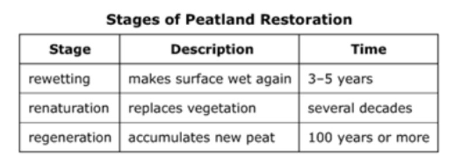
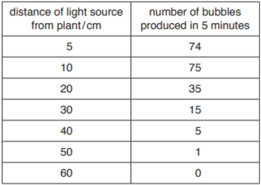
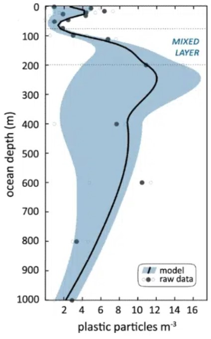
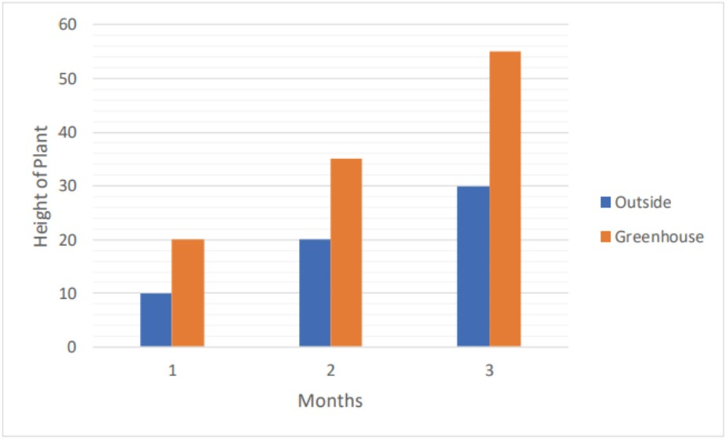

Question 1
Peat is a mixture of partially decomposed plant and animal material found in waterlogged, acidic, anaerobic environments. People debate whether peat is a fossil fuel. To be considered a fossil fuel, a material must be of biologic origin, be used as a source of energy, and replenish on a time scale greater than human lifetimes. Peat reserves have declined over time. However, peat harvesters claim that a restoration process can make peat a renewable resource and allow it to be classified as a biofuel. The restoration process is outlined in the table.
Question 2
Isotopes are chemical cousins. They are related to each other, but each isotope has slightly different — but related — atoms. Each of the related atoms has the same number of protons but a different number of neutrons. Because the number of electrons or protons determines the atomic number, isotopes have the same atomic number. The number of neutrons determines the mass number. Because the number of neutrons in each isotope is different, the mass number is also different. These cousins all have different mass numbers but the same atomic number. Their chemical properties are similar but not the same. Like most cousins, they have chemical properties are similar but not the same. Like most cousins, they have family resemblances, but each has a unique personality.
Question 3
Students learn a simple technique for quantifying the amount of photosynthesis that occurs in a given period of time, using a common water plant (Elodea). They use this technique to compare the amounts of photosynthesis that occur under conditions of low and high light levels. To test this, a green plant was placed in a beaker. A lamp was place at various distances from the beaker. And, count the bubbles produced by the plant for 5 minutes. The results were recorded in the following table.
Question 4
Use the following image as reference to answer question 4.
Question 5
Greenhouses are glass structures that people grow plants in. They allow plants to survive and grow even in the cold winter months by providing light and trapping warm air inside. Light is allowed in through the clear glass walls and roof. Warm air comes in as sunlight through the glass roof. The sunlight is converted into heat, or infrared energy, by the surfaces inside the greenhouse. This heat energy then takes longer to pass back through the glass surfaces and causes the interior of the greenhouse to feel warmer than the outside climate. Plants may grow better inside a greenhouse versus outside for several reasons. There is more control of the temperature and humidity of the environment inside the greenhouse. The carbon dioxide produced by plants is trapped inside the greenhouse and can increase the rate of photosynthesis of the plants. There are also fewer pests and diseases inside the greenhouse.
Scientist A wants to compare how a tomato plant grows inside a greenhouse versus outside a greenhouse. Figure 2 below shows a graph of her results over 3 months.
1. Which conclusion can be drawn based on the information given in the table?
2. A scientist has found related atoms in two different substances. If both atoms have the same atomic number but different mass numbers, what preliminary conclusion can be reached about the atoms?
3. Which conclusion can be drawn from the investigation?
4. According to the following graph measuring plastic particle concentrations at specific depths of the ocean, which of the following statements is true?
5. What is the best conclusion?